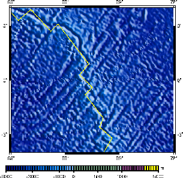
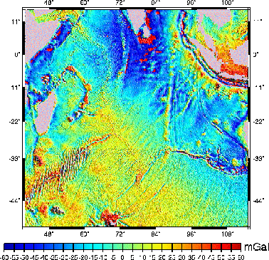

Next: Conclusion
Up: iGMT: Interactive Mapping of
Previous: Usage of iGMT
Subsections
Examples
The following examples were produced by running iGMT with the
full data sets as described above. They can be reproduced if the data
is available locally by loading the parameters file given in the
distribution.
Figure 1 shows the map of example1.ps from the iGMT
distribution, the whole Earth in the Mollweide projection. ETOPO5
in 60 arc minute resolution is the ground raster layer. All
hypocenters of the USGS/NEIC dataset from 1973 - 1997 with magnitude
greater than five and NUVEL1 plate boundaries are superimposed. Load example1.dat to
produce this plot. To reduce the size of this documentation, the
postscript file is not exactly that produced by iGMT but a converted GIF
with lower resolution.
Figure 2 of example number two shows a part of the Indian ocean and the Indian
subcontinent. It was produced using the Smith & Sandwell/GTOPO30
dataset in full resolution and has the pscoast shoreline data in high
resolution superimposed. The original map has fascinating detail that
might be lost in this reproduction.
Figure 2:
A part of the Carlsberg ridge in the Indian Ocean as of
example2.ps,
parameters can be loaded from example2.dat. The original file
has extremely high resolution and was quite big. The reduced
image shown here was shrunk to 81dpi using xv. Bathymetry data
is from Smith and Sandwell (1997), plate boundary from DeMets et al. (1990),
scale is the same than in Fig. 1.
|  |
Example 3 as resp-resented by Fig. 3 and
the files example3.ps and example3.dat shows the North Atlantic region sea-floor age data
coverage together with plate boundaries (Stereographic projection).
Figure 4:
Free-air gravity anomalies in a part of the Indian ocean from
Sandwell and Smith (1997). Dominant features are the Carlsberg,
Southwest Indian and Southeast Indian ridges, the Bengal fan and the
Ninety-east ridge. Resolution was restricted to 10 instead of 2 arc minutes.
|  |
The last example (example4.*) of Fig. 4 shows gravity
anomalies in the Indian ocean. ATTENTION: This example is quite resource hungry
and might lead to problems on smaller machines if actually run with the original data set!
Next: Conclusion
Up: iGMT: Interactive Mapping of
Previous: Usage of iGMT
Alexander Braun
, Thorsten W. Becker, last update on
2000-05-12